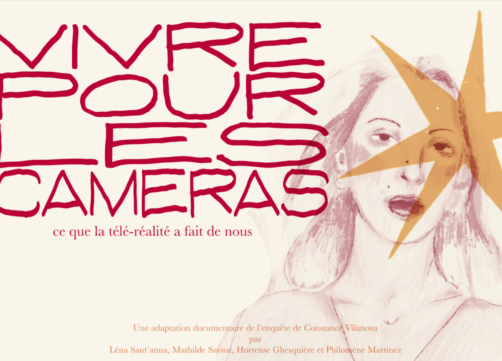
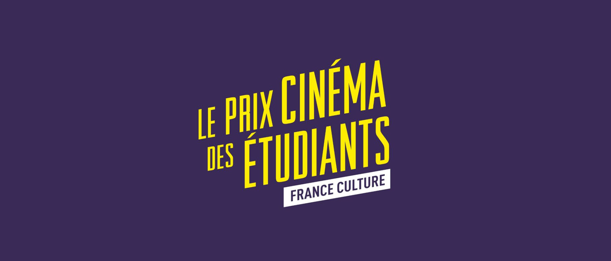
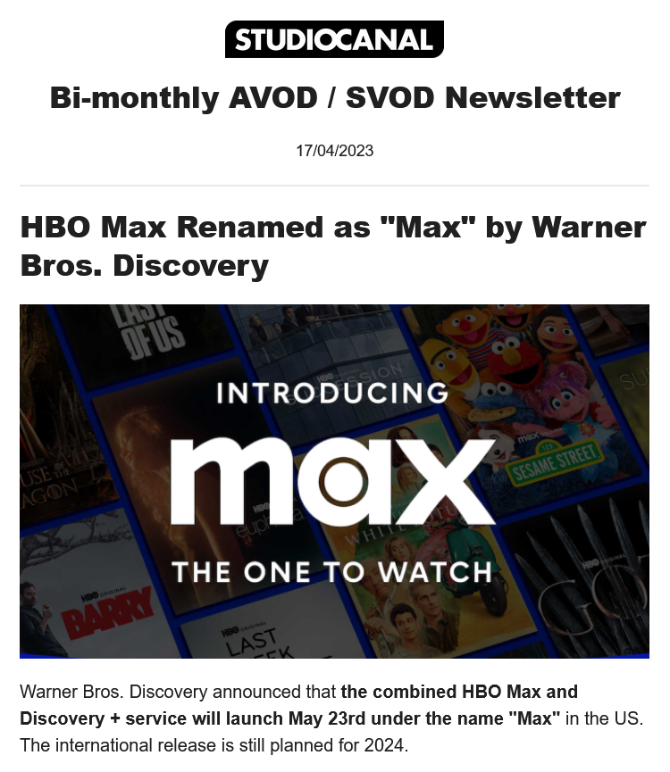
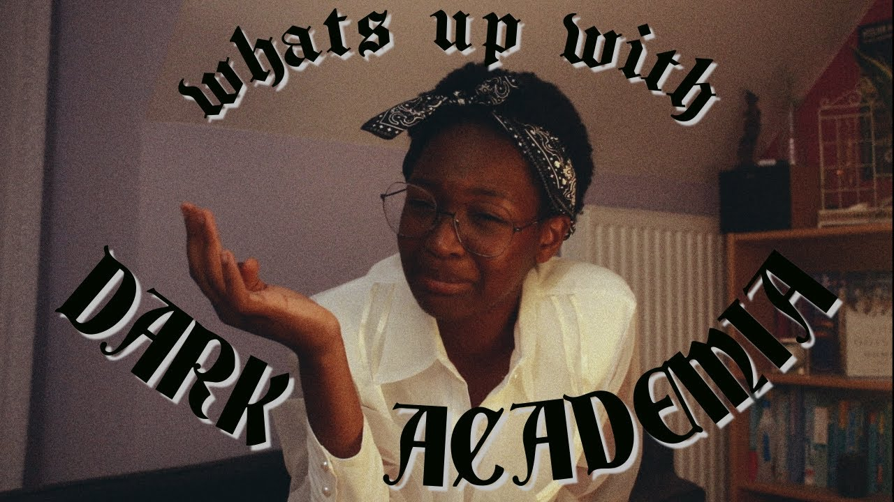
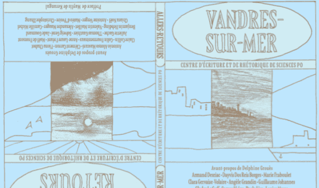
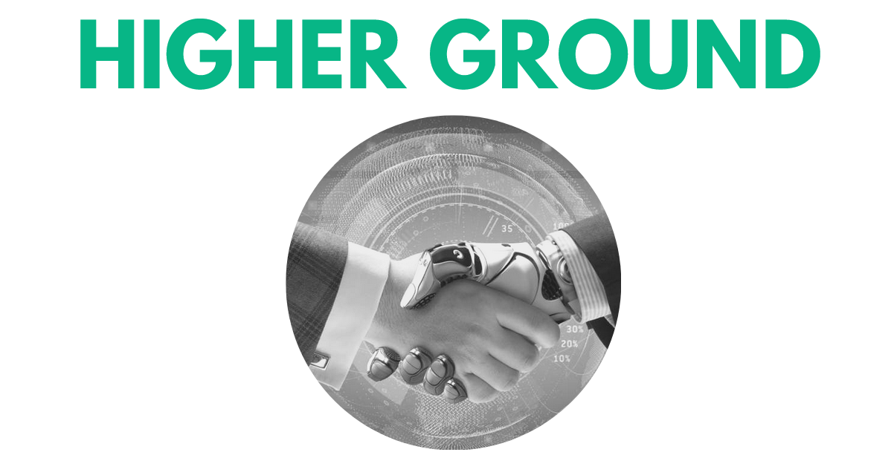
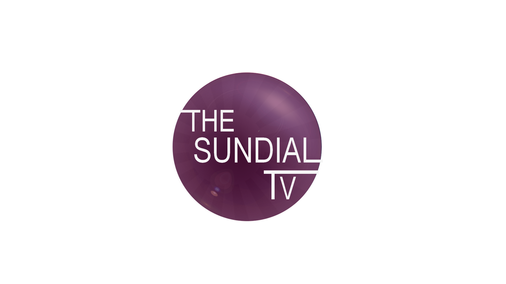

2025

Vivre pour les caméras
INA Campus · Documentary Analysis and Development
Documentary series bible adapted from Constance Vilanova's investigation into the world of reality TV, under the guidance of Céline Loiseau and Olivier Daunizeau. Pitched to a professional jury.

Derrière la porte
INA Campus · Writing – Directing – Editing Workshop
Documentary short about the atypical caretaker of a building in the 12th arrondissement of Paris. Budget and financing plan for an adaptation into a 26-minute festival short, under the guidance of Frédéric Mermoud.
2024

Raclette Party
1000 visages association · Screenwriting Workshop
Short film screenplay about a dinner party gone wrong. Pitched and read on stage by actors, as part of a workshop led by Robin Dimet through the 1000 visages association, founded by Houda Benyamina to widen access to the film industry.
2023

Jury — Prix Cinéma des Etudiants France Culture
France Culture · Student Jury
Screened seven films (Annie Colère, Retour à Séoul, Stella Est Amoureuse, Saint Omer, Youssef Salem a du Succès, Aya, Atlantic Bar), held discussions with the directors and fellow jury members, and voted to award the prize.

Bi-monthly AVOD / SVOD Newsletter
StudioCanal · International sales assistant
Bi-monthly internal newsletter on the global streaming business (SVOD, AVOD, FAST). The mailing list reached about 70 employees, from sales to the CEO, including the legal department.
2022

15 mètres de haut
Sciences Po · The New Broadcasting Model
Young adult TV series bible set in the arena of Olympic-level sport, under the guidance of Pauline Dauvin.
2021

lowercase léna
YouTube · Content Creator
YouTube channel with over 1,200 subscribers dedicated to literature, media, and pop culture since 2018. In 2021, a video dissecting the "Dark Academia" trend and its presence in literature and on screen gained over 20,000 views.
2020

39 rue de la Vase — Photo de nuit
Sciences Po · Centre for Writing and Rhetorical Arts
Flash fiction written for an anthology chronicling the lives of inhabitants of a fictional seaside city, co-created during a writing workshop led by Maylis de Kerangal. Published by Sciences Po's Centre for Writing and Rhetorical Arts.
2018

Higher Ground
Sciences Po · Dystopias on Screen
Dystopian science fiction series bible set in a world controlled by artificial intelligence, under the guidance of Virginie Lauret.

Sundial TV
Sciences Po Reims · Campus Media
Treasurer and secretary of the Sciences Po Reims campus media channel. Covered community events, developed and wrote show formats, shot and edited videos, and co-managed a creative team of thirty students.